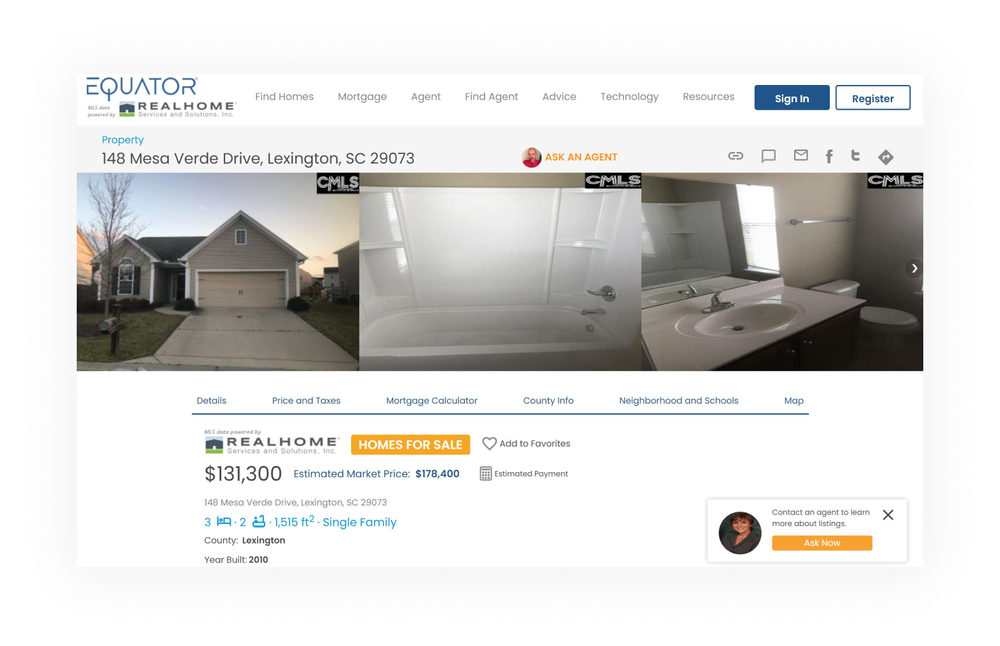
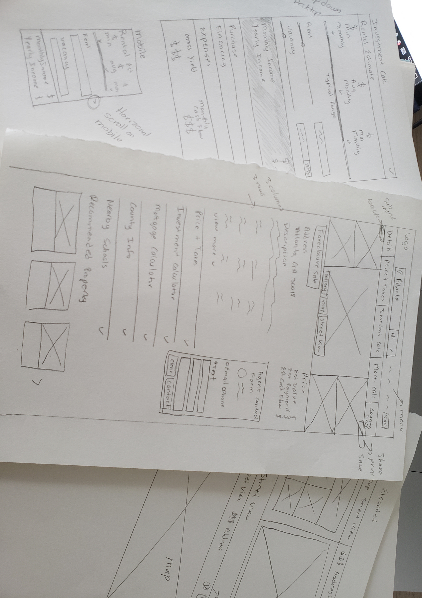

Equator Property Details Page
During my time at Altisource, I was assigned as the main UX/UI designer for one of our sub-unit called Equator.com. Equator is a property marketing platform that allows investors to find auction, foreclosure, and short sale houses. The platform overall is outdated and needed much UX and UI improvement to help increase our investor base.
For this project, I was tasked to clean up the user interface and the information architecture of the property details page. Our investors need to experience a pleasant experience when deciding on purchasing a property.Research
After setting up meetings with the Design Director and Product Manager, I was able to grasp the scope of the project. I also studied the current page to align with the goals of what our team is trying to achieve versus the problems I find as a UX designer. Some of my findings are as follows:
- Since we won't have participants for user testings, I'll have to rely on past data from older projects, feedback, and user behavior analysts from the CRM team
- Saving and sharing CTA's are hard to find
- The Property map is at the bottom, it should be near the top since property location is one of the most important factors in decision making
- Agent CTA is confusing
PROBLEMS
- Display a contact agent form on the right side of the page to create easier access for investors without having to find a CTA button
- Divide property details into collapsable sections: Price and Taxes, Investment Calculator, Mortgage Calculator, County Info, Nearby Schools, and Recommended Properties
- Move the property map to the top and add a street view option
- Implement a newly developed design system for a cleaner look
SOLUTIONS
- Must implement an investment calculator and monthly mortgage breakdown
- Must create a better way to drive more investors to reach out to our agents
REQUIREMENTS
- Due to the pandemic, we'll have no budget or participants for user testings
CONSTRAINTS
Information Architecture
I noticed that although most sections are intuitive, the property information right under the gallery was quite messy. Important information such as property address, sharing, and saving features were drownded and forgotten once the user scrolls the page. There is a chatbot that supposed to connect the user to an agent, but there's also a CTA to reach out to another agent. This is confusing as to who the user should reach out should the user have questions regarding the property. My goal was to display all of the crucial information our users need for decision-making within the fold.

I reached out to my Design Director and he verified that since the chatbot was rarely used, it has not been bringing us any leads to increase interests. As a result, we decided to get rid of it to further highlight an agent from our network who paid us to be the first point of contact.
Additionally, I created a share and save CTA's, and moved them within the fold. The property address was then enlarged and bolded along with the property price. Thus, allowing users to quickly view crucial information holistically within the fold before having to scroll the page.
Design
When creating the high-fidelity designs, I relied on the design system created previously. Having it developed beforehand really saved time given the design time was only one week.